基本的な使い方
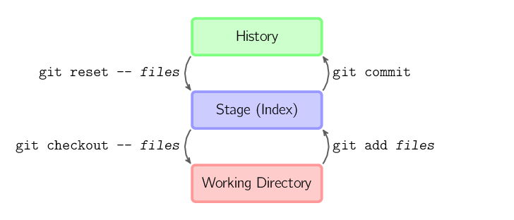
上記の4つのコマンドは、作業ディレクトリ、ステージングディレクトリ（インデックスとも呼ばれる）、およびリポジトリの間でファイルをコピーします。
git add files現在のファイルをステージングエリアに置きます。git commitステージングエリアのスナップショットを生成してコミットします。git reset -- files最後のコミットを取り消すために使用しますgit add files、また次を使用できますgit resetステージングエリアのすべてのファイルを取り消します。git checkout -- filesファイルをステージングエリアから作業ディレクトリにコピーして、ローカルの変更を破棄します。
次を使用できますgit reset -p, git checkout -p, or git add -pインタラクティブモードに入ります。
ステージングエリアをスキップして、リポジトリから直接ファイルを取得したり、直接コードをコミットしたりすることもできます。
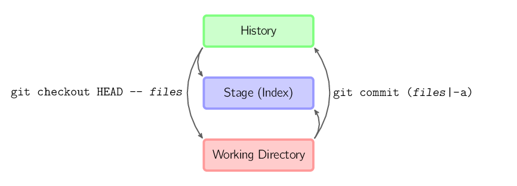
git commit -a次を実行することに相当しますgit add現在のディレクトリ内のすべてのファイルをステージングエリアに追加してから実行します。git commit.git commit files最後のコミットに加え、作業ディレクトリ内のファイルのスナップショットを含むコミットを実行します。そして、ファイルはステージングエリアに追加されます。git checkout HEAD -- files最後のコミットまでロールバックします。
規約
以降の文章では、以下の形式で画像を使用します。
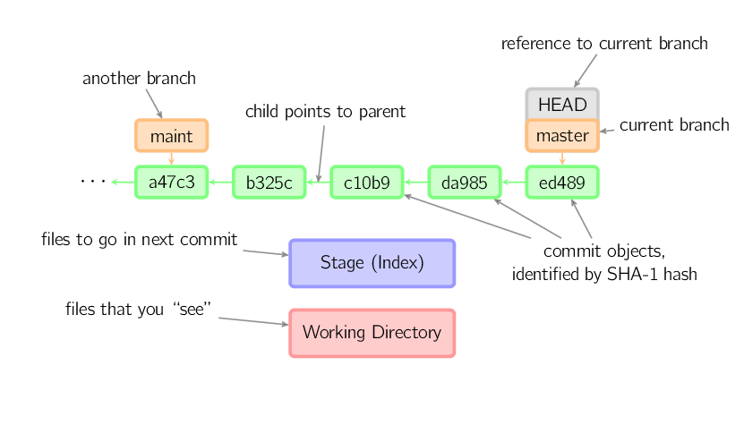
緑色の5桁の文字はコミットのIDを表し、それぞれ親ノードを指します。ブランチはオレンジ色で表示され、それぞれ特定のコミットを指します。現在のブランチは、それに付属するHEAD識別子によって示されます。この画像には最後の5回のコミットが表示されており、ed489が最新のコミットです。masterブランチはこのコミットを指しており、別のmaintブランチは祖父コミットノードを指しています。
コマンドの詳細
Diff
2つのコミット間の変更を確認する方法はいくつもあります。以下はいくつかの例です。
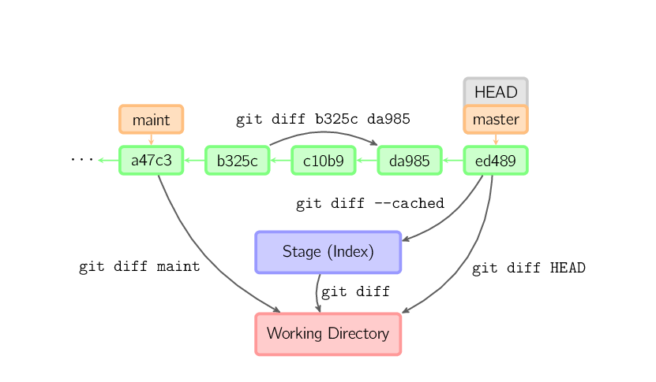
Commit
コミット時、gitはステージングエリアのファイルから新しいコミットを作成し、その時点のノードを親ノードに設定します。そして、現在のブランチを新しいコミットノードに移動させます。下の図では、現在のブランチはmasterです。コマンドを実行する前は、masterを指しており、ed489、コミット後は、master新しいノードを指します。f0cecそしてed489を親ノードとします。
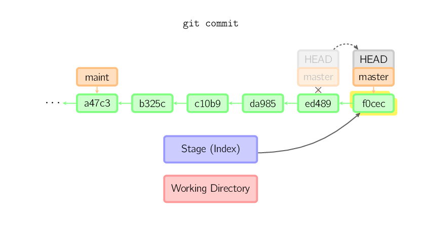
現在のブランチがあるコミットの祖父ノードであっても、gitは同じように動作します。下の図では、masterブランチの祖父ノードmaintブランチでコミットを実行すると、次が生成されます。1800b。これにより、maintブランチはもはやmasterブランチの祖父ノードではなくなります。この場合、マージ（またはリベース）が必要です。
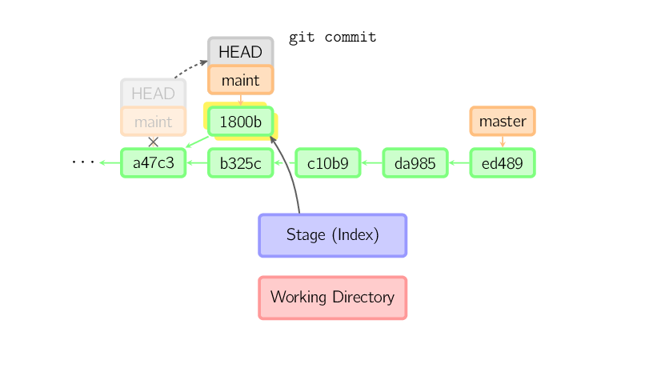
コミットを変更したい場合は、次を使用します。git commit --amend。gitは現在のコミットと同じ親ノードを使用して新しいコミットを実行し、古いコミットは取り消されます。
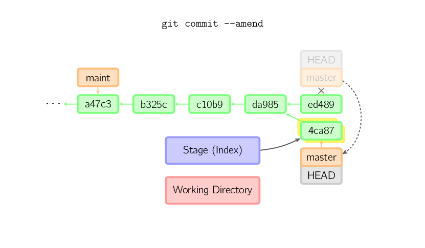
もう1つの例は、HEADを分離した状態でのコミットです。後述します。
Checkout
checkoutコマンドは、履歴コミット（またはステージングエリア）から作業ディレクトリにファイルをコピーするために使用され、ブランチの切り替えにも使用できます。
特定のファイル名が指定された場合（または-pオプションを有効にした場合、またはファイル名と-pオプションを同時に有効にした場合）、gitは指定されたコミットからファイルをステージングエリアと作業ディレクトリにコピーします。たとえば、git checkout HEAD~ foo.cはコミットノードHEAD~（つまり現在のコミットノードの親ノード）内のfoo.cを作業ディレクトリにコピーし、ステージングエリアに追加します。（コマンドでコミットノードが指定されていない場合は、ステージングエリアから内容がコピーされます。）現在のブランチは変更されないことに注意してください。
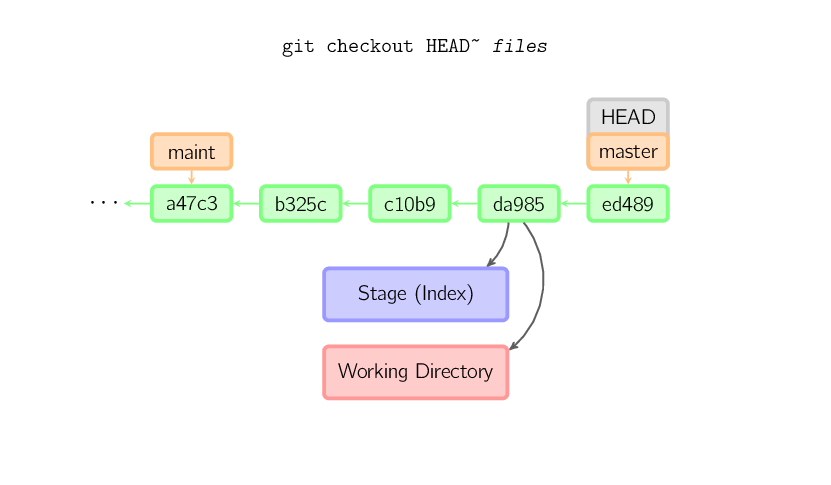
ファイル名を指定せずに（ローカル）ブランチを指定した場合、HEAD識別子はそのブランチに移動し（つまり、そのブランチに「切り替えた」ことになります）、ステージングエリアと作業ディレクトリの内容はHEAD対応するコミットノードと一致します。新しいコミットノード（下図のa47c3）内のすべてのファイルがコピーされ（ステージングエリアと作業ディレクトリに）、古いコミットノード（ed489）にのみ存在するファイルは削除され、上記のいずれにも属さないファイルは無視され、影響を受けません。
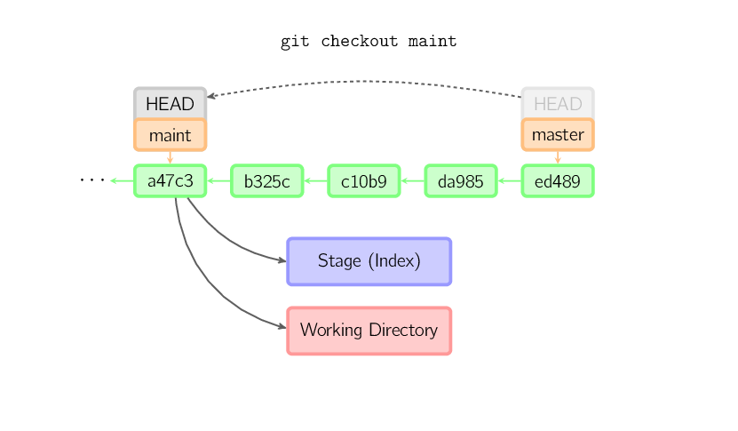
ファイル名もブランチ名も指定せず、タグ、リモートブランチ、SHA-1値、または次のようなものを指定した場合、master~3のようなものの場合、匿名ブランチが得られ、次のように呼ばれます。detached HEAD（分離されたHEAD識別子）。これにより、履歴バージョン間を簡単に切り替えることができます。たとえば、git 1.6.6.1 バージョンをコンパイルしたい場合は、次を実行できます。git checkout v1.6.6.1（これはタグであり、ブランチ名ではありません）、コンパイル、インストール、そして別のブランチに切り替えます。たとえば、git checkout master。ただし、コミット操作が「分離されたHEAD」に関係する場合、その動作は少し異なります。詳細は下記を参照してください。
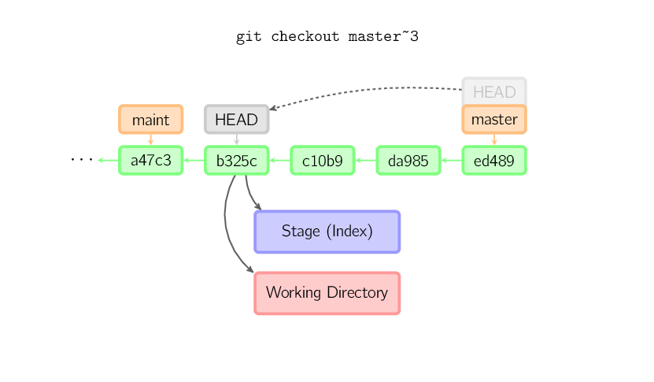
HEAD識別子が分離状態にあるときのコミット操作
当HEAD分離状態（いずれのブランチにも属さない）の場合、コミット操作は通常どおり実行できますが、名前付きブランチは更新されません。（これは匿名ブランチを更新していると考えることができます。）
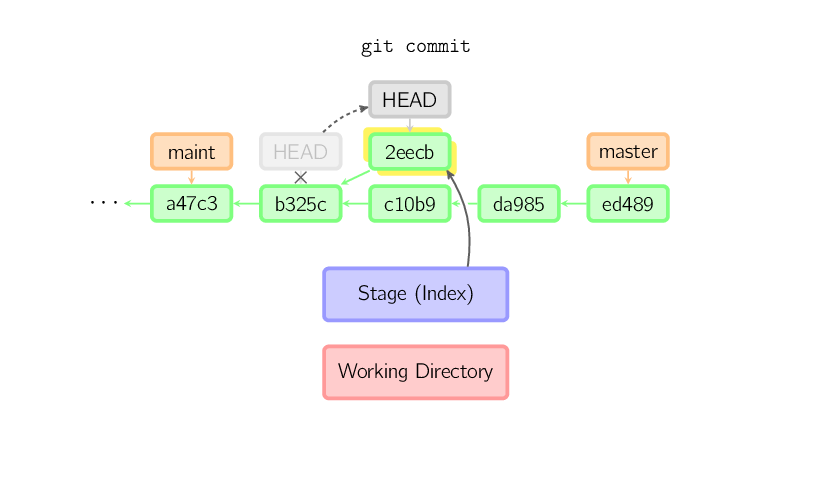
その後、別のブランチに切り替えると、たとえばmaster、このコミットノードは（おそらく）二度と参照されず、破棄されます。このコマンドの後、このコミットを参照するものは何もないことに注意してください。2eecb。
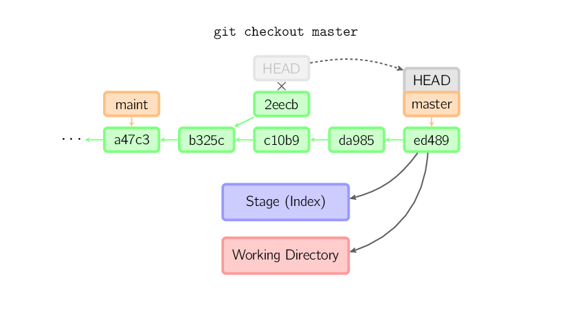
ただし、この状態を保存したい場合は、コマンドgit checkout -b nameを使用して新しいブランチを作成できます。
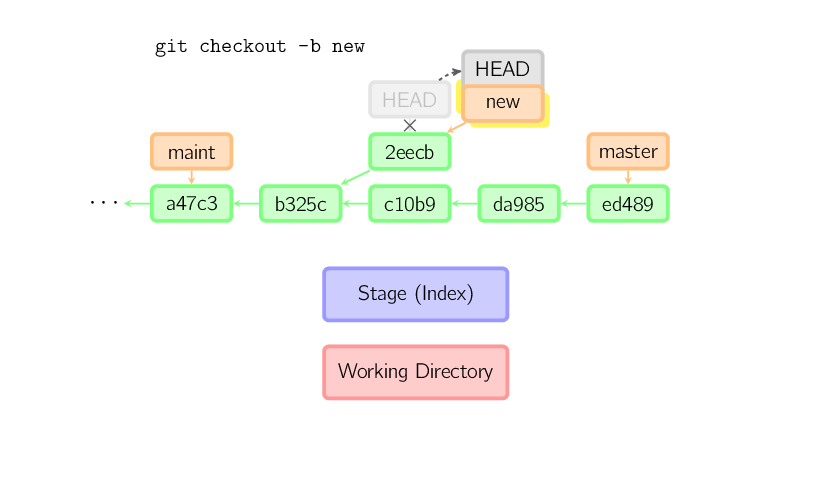
Reset
resetコマンドは、現在のブランチを別の位置に移動させ、作業ディレクトリとインデックスを選択的に変更します。また、履歴リポジトリからインデックスにファイルをコピーするためにも使用され、作業ディレクトリは変更されません。
オプションを指定しない場合、現在のブランチはそのコミットを指します。もし--hardオプションを使用すると、作業ディレクトリも更新されます。もし--softオプションを使用すると、どちらも変更されません。
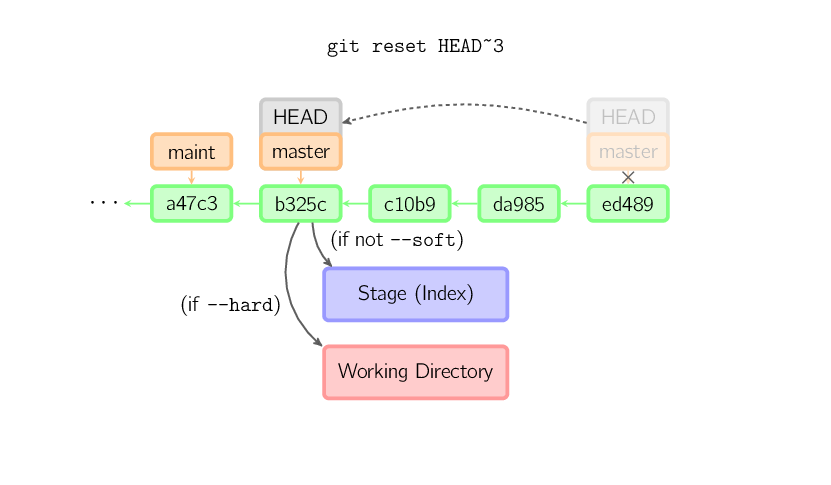
コミットポイントのバージョン番号が指定されていない場合、デフォルトでHEADが使用されます。これにより、ブランチの指す先は変わりませんが、インデックスは最後のコミットまでロールバックされます。もし--hardオプションを使用すると、作業ディレクトリも同様にロールバックされます。
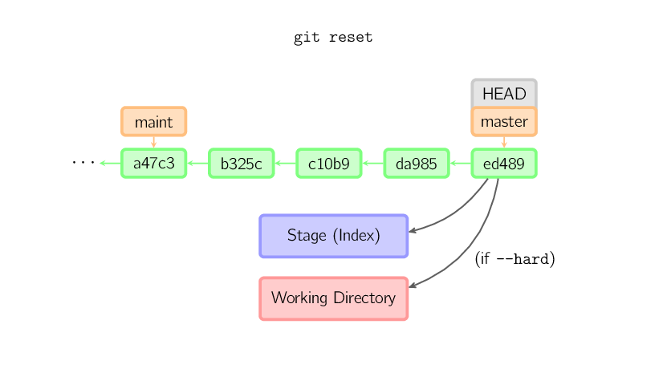
ファイル名が指定された場合（または-pオプション）、その効果はファイル名を指定したcheckoutとほぼ同じですが、インデックスが更新される点が異なります。
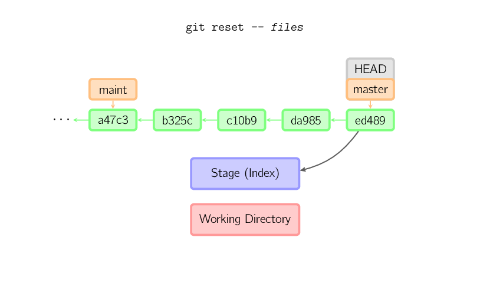
Merge
mergeコマンドは、異なるブランチをマージします。マージする前に、インデックスは現在のコミットと同じである必要があります。別のブランチが現在のコミットの祖父ノードである場合、マージコマンドは何も行いません。もう1つのケースは、現在のコミットが別のブランチの祖父ノードである場合、次の結果になります。fast-forwardマージ。指す先が単純に移動し、新しいコミットが生成されます。
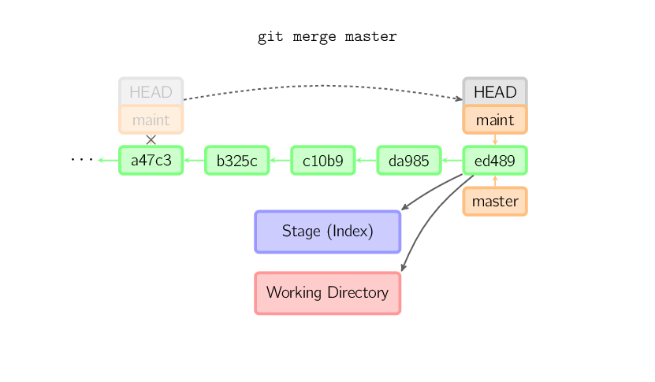
それ以外の場合は、本当のマージです。デフォルトでは、現在のコミット（ed489下記のとおり）と別のコミット（33104）、およびそれらの共通の祖父ノード（b325c）に対して三方マージを実行します。結果は、現在のディレクトリとインデックスを最初に保存し、次に親ノード33104と一緒に新しいコミットを作成します。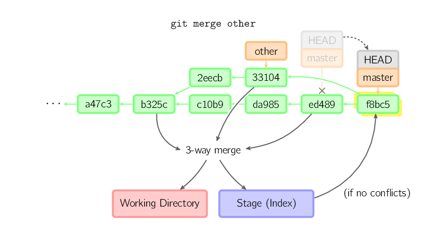
Cherry Pick
cherry-pickコマンドは、コミットノードを「コピー」し、現在のブランチにまったく同じ新しいコミットを作成します。
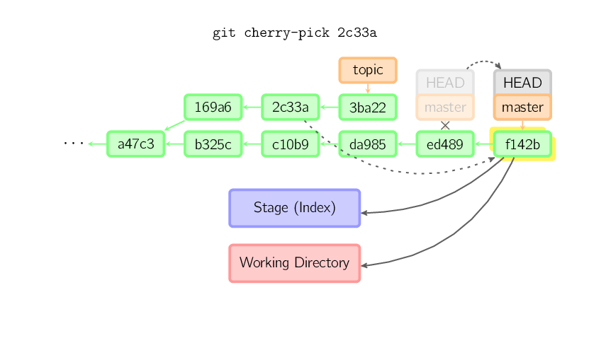
Rebase
リベースは、マージコマンドのもう1つの選択肢です。マージは2つの親ブランチを1つのコミットにマージするため、コミット履歴は線形ではありません。リベースは、現在のブランチ上で別のブランチの履歴を再生するため、コミット履歴は線形になります。本質的に、これは線形化された自動cherry-pickです。
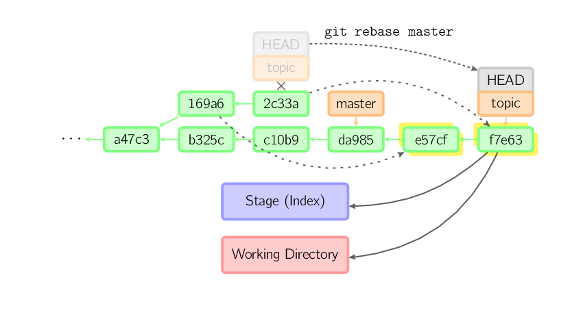
上記のコマンドはすべてtopicブランチ上で実行され、ではなくmasterブランチ上で、masterブランチ上で履歴を再生し、ブランチを新しいノードに移動させます。古いコミットは参照されず、リサイクルされることに注意してください。
ロールバックの範囲を制限するには、次を使用します。--ontoオプション。次のコマンドはmasterブランチ上で、現在のブランチの169a6以降の最近のいくつかのコミットを再生します。すなわち2c33a。
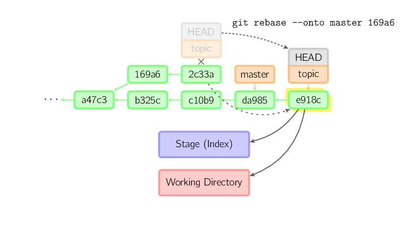
同様にgit rebase --interactiveコミットの破棄、並べ替え、変更、マージなどの複雑な操作をより簡単に行えます。これらの図はありません。詳細はこちらを参照してください:git-rebase(1)
技術的な説明
ファイルの内容は実際にはインデックス（.git/index）やコミットオブジェクトに保存されるのではなく、blobとして個別にデータベースに保存されます（.git/objects）。また、SHA-1値を使用して検証されます。インデックスファイルは、関連するblobファイルやその他のデータを識別コードでリストします。コミットについては、ツリー（tree）の形式で保存され、同様に対応するハッシュ値で識別されます。ツリーは作業ディレクトリ内のフォルダに対応し、ツリーに含まれるツリーまたはblobオブジェクトは、対応するサブディレクトリとファイルに対応します。各コミットは、その上位のツリーの識別コードを保存します。
detached HEADでコミットした場合、最後のコミットはHEADのreflogによって参照されます。しかし、しばらくすると無効になり、最終的にリサイクルされ、git commit --amendまたはgit rebaseと非常に似ています。
原文リンク：http://marklodato.github.io/visual-git-guide/index-zh-cn.html